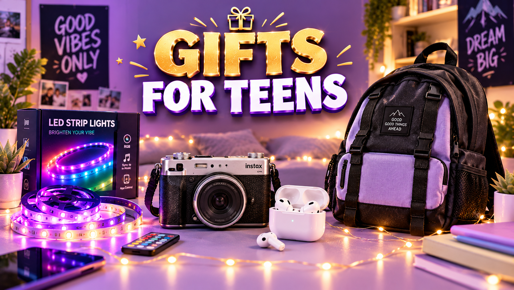

Christmas Gifts for Teens 2026: Cool Ideas They Want
Published October 12, 2026 · Updated October 12, 2026 · By EventBuzz Team

Teenagers are the final boss of Christmas shopping. Their tastes change monthly, they notice brands, and "I don't know, whatever" is their default answer to direct questions. But teens are not actually mysterious — they just need a different research method. This guide to Christmas gifts for teens in 2026 shows you how to find out what they really want (without interrogating them), then delivers the categories that consistently win: audio gear, room upgrades, gaming accessories, fashion and self-care, and gift cards presented the right way.
Why Teens Are Hard to Shop For (and the Fix)
Teenagers reject direct questions because "what do you want for Christmas" feels like a test. Instead, use indirect research:
- Watch their screen time interests: what creators, games, sports or music do they follow? Fandoms are gift goldmines.
- Notice what they borrow: the sibling's headphones, your charger, a friend's jacket — borrowed items are unspoken wish lists.
- Ask a sideways question: "If you had $50 to spend on anything for your room, what would it be?" gets honest answers where "what do you want" gets shrugs.
- Recruit an ally: their best friend or sibling usually knows exactly what they want and loves being consulted.
Tech and Audio Gifts Teens Love
Audio is the single safest teen category. Quality wireless earbuds or over-ear headphones get used for music, gaming, calls and homework focus — hours every day. A portable Bluetooth speaker for the room, a phone tripod with a ring light for the aspiring creator, or a fast-charging power bank all land well. For gamers: a quality headset, a controller in their console's colour, or a gift card for their gaming platform's store. One rule: check compatibility. Headphones must work with their phone (wired vs wireless matters), and console accessories must match the exact console they own.
Room Decor and Cozy Upgrades
Their room is their kingdom, and upgrades to it always feel personal. LED strip lights or a galaxy projector transform a bedroom instantly and photograph beautifully. A cozy throw blanket, fun-shaped cushions, a poster or tapestry of their favourite band, game or aesthetic, and a small vanity mirror with lights for getting ready all work. Desk upgrades — a laptop stand, a funky desk lamp, organizers — suit the studious teen. These gifts show you see them as a person with their own space and taste, which matters enormously at this age.
Fashion, Skincare and Self-Care
Teens care about how they look, which makes this category powerful — if you get the specifics right. Safe bets: a hoodie or sneakers in a brand they already wear, a beanie and scarf set, or a quality backpack. For skincare: gentle starter sets from brands their friends use (ask the ally), lip balms, or a simple fragrance. Never buy clothing in a surprise size unless you have checked their current size — teens are sensitive about fit. When in doubt, choose accessories over clothes: socks with fun designs, a watch, sunglasses, or jewelry in their style.
Gaming, Sports and Hobby Picks
Match the gift to the obsession. Gamers want the headset, the controller, the game they mentioned, or credit for in-game purchases. Athletes want gear for their sport — quality socks, a gym bag, a water bottle, training accessories, or tickets to see their team. Creative teens love quality art supplies, a sketchbook with good paper, a beginner instrument accessory, or a polaroid-style instant camera. The key with hobby gifts is specificity: the exact game, the exact team, the exact supply. Generic "sports stuff" disappoints; the precise item delights.
Gift Cards and Money: How to Make Them Personal
Teens genuinely like gift cards — the "lazy gift" reputation is an adult invention. The trick is presentation and specificity:
- Choose THEIR store: their favourite clothing brand, gaming platform, bookstore or coffee shop — never a generic mall card if you can avoid it.
- Pair it with something small: a $25 store card plus their favourite candy, a funny card, or a small related item feels complete.
- Write a real note: "for the sneakers you've been eyeing" beats a blank envelope every time.
- Consider experiences: movie tickets for two, a concert, or an escape room with friends often beats stuff at this age.
What Not to Buy for a Teen
- Childhood toys: nothing says "I don't see you growing up" like a toy meant for a 9-year-old.
- Surprise clothing in the wrong size or style: high rejection risk; stick to accessories or gift cards.
- Generic "teen" gift sets: the pre-packaged "gifts for teens" boxes from discount stores read as zero-effort.
- Anything that lectures: self-help books and "motivational" gifts land badly unless specifically requested.
- Duplicates of what they own: check with parents or siblings first — teens often already have the obvious picks.
The teen gifting formula: one thing they asked for (or clearly want), one surprise in their interest area, and one gift card. Variety beats a single big gamble.
Wrapping That Impresses Teens
Teens do notice presentation, even if they pretend not to. Skip the cartoon wrapping paper — go for sleek solid colours, a gift bag with tissue, or a sturdy gift box. Layering works: put the gift card inside a small box, inside a bigger box, with a funny note in each layer. And always include a card with something genuine; even eye-rolling teens keep those. Our gift presentation picks below have bags, boxes and cards sorted.
Frequently Asked Questions
What do teenagers want most for Christmas 2026?
Teens consistently want tech and audio gear (earbuds, headphones, speakers), room upgrades like LED lighting, gaming accessories, fashion from brands they wear, and gift cards to their favourite stores.
How much should I spend on a teen's Christmas gift?
It depends on the relationship, but most family gifts for teens land between $25 and $100. One thoughtful main gift plus a small extra and a card beats several random items.
Are gift cards a cop-out for teens?
No — teens prefer choosing for themselves. Make it personal by picking their specific favourite store, pairing it with a small item, and writing a note about what it is for.
What is a good Christmas gift for a teenage girl?
Popular picks: quality earbuds, LED room lights, skincare sets, a cozy hoodie or blanket, jewelry in her style, an instant camera, or a gift card to her favourite clothing store.
What is a good Christmas gift for a teenage boy?
Popular picks: a gaming headset or controller, wireless earbuds, sneakers, a portable speaker, sports gear for his team or sport, or credit for his gaming platform.
What should I avoid giving a teenager?
Avoid childhood toys, surprise clothing in uncertain sizes, generic pre-packaged "teen" gift boxes, and anything that feels like a lecture. When unsure, go with their hobby or a gift card.
Conclusion
Crack the research — watch what they borrow, ask sideways questions, recruit a friend — then buy into their actual interests: audio, their room, their game, their style. Do that and you will dodge the dreaded polite "thanks" and get a genuine reaction instead.
More Christmas help from EventBuzz:
Happy gifting — may you earn the rare genuine teen smile this Christmas!
Gift Presentation Picks
Gift bags, boxes and cards that make any Christmas gift look extra special.


Prices shown at the time of publishing and can change. Links take you to AliExpress, where shipping and delivery details are shown.